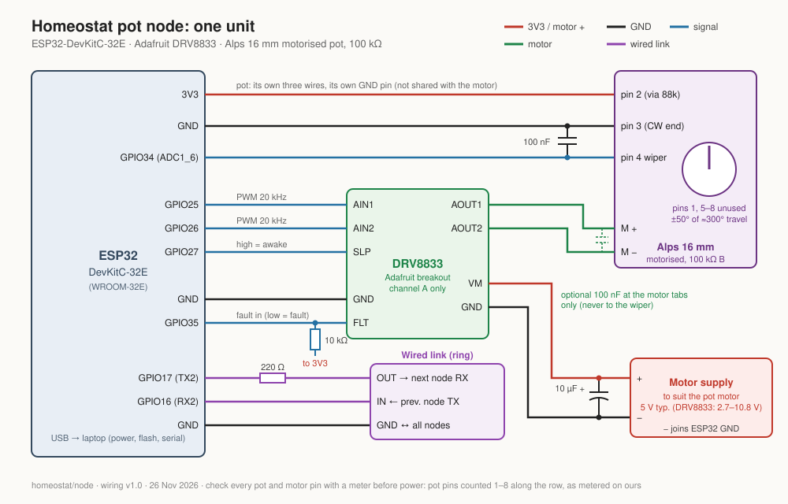

Back to the TL fader · node/ on GitHub
A unit you can hold: the pot node
The next step on from the TL fader: one unit of the homeostat built to run on its own, with a motorised rotary pot as its needle and its hand control. An ESP32 will run the unit's equation itself, so four of these wired together are a homeostat with no laptop. Built on 26 November 2026 from an ESP32-DevKitC-32E, an Adafruit DRV8833 and an Alps 16 mm motorised pot. This page records the first day: one node, from blank board to a needle that goes where it is told and lands on the marks.
Asked for 0°, ±25° or ±50°, it lands within about 0.5–0.8° with no overshoot. A full swing from −50° to +50° takes about 4.5 s.
About 28°/s at full power, which is the datasheet's 300° in 12 ± 3 s. The unit's model will have to live at that pace, or let the needle lag on fast swings.
A generic pinout for the pot put the wiper on pin 3; ours is on pin 4, and its "ground end" sits behind another 88 k. The meter found it, after the reading had said 4095, then 1967, then 0.
What we did
- Wrote the plan first. A README with a wiring diagram: the pot on its own three wires and its own ground (the fader's lesson), the DRV8833 at 20 kHz so it should be silent, and four nodes on a wired ring: each node's TX to the next one's RX, one shared ground, no transceivers. The needle uses 100° of the pot's 300°: Ashby's ±45° and 5° of margin each side.
- The board wouldn't take its first upload. It went into download mode and talked to the laptop, but never heard back (
serial TX path seems to be down). On USB alone, out of the breadboard, it flashed first time: something in the breadboard was sitting on the RX pin. On the DevKitC, RX and TX are only a few pins from 16 and 17, which the wired link uses. - A flat 4095. The pot read full scale whatever the knob did. The meter said pins 2 and 3 are the steady pair and 2 ↔ 4 sweeps, so the wiper is pin 4, not pin 3. The pot had been wired with 3V3 on its wiper, which at one end of its travel would have shorted 3V3 to ground.
- The motor was on the board's 5 V. It crawled, and wouldn't start below about half power. The part is an RK16812MG0AF, whose datasheet gives a 4.5 V motor (4–6 V) at 300° in 12 s. On its own 5 V supply it doubled in speed.
- A reading that stopped at 1967. Turned by hand or by motor, it never went below 1967 one way: about 1.7 V where it should have been 0. Metering gave 174 k across pins 2 and 3 and 88 k from 2 to the wiper at the end stop. The track itself is about 86 k, with another 88 k in front of it on pin 2. Our meter shows an open circuit as "0", which sent us hunting on pin 1 for a while.
- Swapped the ends. With 3V3 on pin 2 and ground on pin 3, the wiper runs from 0 V to 1.65 V over the full turn: the ESP32 ADC's straightest stretch, and no clipping. Quiet: ±3 counts standing still.
- A hum, and nothing moving. The firmware's motor direction was backwards after the swap, and it pushed the knob into its end stop for half a minute. That's the hum: the motor stalled against the stop, within the datasheet's end-slip current. Turned the other way, from the middle, it moved properly.
- The wiper let go under a hand. Turning the knob by hand gave spikes and four seconds of solid 4095: the pot's pins shifting in the breadboard. Firmed up, and the readings stayed clean.
- Calibrated to marks on the faceplate. One mark at a time, knob resting, two seconds each: −50° = 1779, 0° = 1519, +50° = 1229. The two halves differ by about 10%, so degrees are two straight lines meeting at 0 and every mark is exact (Fig. 2).
- Tuned the hold. The real scale (about 5.5 counts a degree) is coarser than the first guess, so the same angle gave the motor less push and most moves crept along at the floor. A stronger push and a tighter deadband (about 1°): holds now land within a degree, with no overshoot.
- Drew a needle. A sketch on paper became a printable pointer (Fig. 3): a push-fit hub for the 6 mm D shaft, a long arm, and a raised tab 90 mm out that is both the pointer and the place to take hold.
What went wrong, and what it looked like
Like the fader, almost all of it looked like software and was wiring.
| What it did | Cause | Fix |
|---|---|---|
Upload fails: serial TX path seems to be down | Something in the breadboard on the RX (GPIO3) row | Flash on USB alone; keep the RX and TX rows empty |
| Pot reads a flat 4095 | 3V3 on the wiper (pin 4), ADC on an end (pin 3), from a generic pinout | Meter it: the pin whose reading changes as you turn is the wiper |
| Motor crawls, won't start below ~50% | Motor on the DevKitC's 5 V pin, after its diode and the USB port | Its own 5 V supply on VM, grounds joined |
| Reading never goes below 1967 (1.7 V) | Pin 2 reaches the track only through another 88 k | 3V3 on pin 2, GND on pin 3: wiper runs 0–1.65 V |
| Pot reads a flat 0 after a rewire | Pot lost its 3V3 wire | Reseated |
| Hums, doesn't move | Motor direction backwards: pushing into the end stop | Direction measured and fixed in firmware v1.3 |
| Spikes and seconds of 4095 when the knob is handled | Pot pins moving in the breadboard | Firmer connection; the firmware will still need a jump filter |
| A meter "0" where there should be a resistance | This meter shows open circuit as 0 | Check what it shows with the probes apart |
| Holds slow and stopping 2–3° short | Gain and deadband set for a guessed scale | KP 4, deadband 6 counts (v1.6) |
Fig. 1: The wiring
One node. The pot has its own three wires and its own ground pin; the motor's 5 V touches only the driver's VM. The wired link is drawn but not yet used: one node on its own simulates the other three units.

| From | To | Note |
|---|---|---|
| Pot 2 / 3 / 4 | 3V3 / GND / GPIO34 | Pin 4 is the wiper; 2 reaches the track through ~88 k. 0.1 µF from wiper to GND |
| DRV8833 AIN1 / AIN2 | GPIO25 / GPIO26 | Both PWM at 20 kHz, slow decay |
| DRV8833 SLP / FLT | GPIO27 / GPIO35 | FLT has a 10 k pull-up to 3V3 |
| DRV8833 AOUT1 / AOUT2 | Pot motor pins | The two pins at the back |
| DRV8833 VM / GND | 5 V supply + / − | 10 µF + 0.1 µF across them; − joins the ESP32's GND |
| GPIO17 (via 220 Ω) / GPIO16 | Next node's RX / previous node's TX | Not used yet |
Fig. 2: Calibration and holds
The marks
| Mark | Reading | To the next mark |
|---|---|---|
| −50° (counter-clockwise) | 1779 | |
| 0° | 1519 | 260 counts, 5.2 a degree |
| +50° (clockwise) | 1229 | 290 counts, 5.8 a degree |
Each read with the knob resting on its mark for 2 s: steady to ±2 counts, under half a degree.
Holds (firmware v1.6)
| Asked for | From | Landed | Within 1.5° after |
|---|---|---|---|
| 0° | 7.4° | 0.5° | 0.6 s |
| −50° | 0.7° | −49.2° | 3.8 s |
| +50° | −49.6° | +50.2° | 4.5 s |
| 0° | 50.0° | 0.5° | 3.0 s |
| −25° | 0.2° | −24.2° | 2.0 s |
| +25° | −24.4° | +24.7° | 3.1 s |
No overshoot on any move. Settled, it holds within about 0.5–0.9°. Full power is 26–30°/s either way.
Fig. 3: The needle
Drawn from a sketch on paper. A push-fit hub on the 6 mm D shaft (bore 6.15 across the round, 4.60 across the flat), a 6 × 5 mm arm, and a 10 mm tab with a V point exactly 90 mm from the shaft: the pointer, and the place a hand takes hold. It prints flat with no supports, about 5.5 g in PLA. The build script checks the part before it writes the STL: one closed body that survives being saved, the tip at 90.000 mm, the bore sizes measured from the saved file.
Day two: the hand
27 November. The motor holds the needle with no time limit; push against it and it goes slack, and the hand has the needle. Leave the knob still for 0.7 s and the motor takes it back, holding it where the hand left it. As on the fader there is no touch sense, so a hand is judged by what it does: the needle more than 4° off, and the motor, after pushing for a quarter of a second, not winning any of it back. The first quarter-second of any push is never judged, because the motor starts slowly, and ordinary moves to ±45° never tripped it.
| What the hand did | What the node did |
|---|---|
| Pushed it up against the motor, then let go | Hand on at 15.3°; slack under the hand to about 21°; 0.7 s after it stopped, holding 20.9° |
| Dragged it down slowly | Hand on at 10.7°; followed the hand to −36.7°; let go, held −36.5° to within ±0.4° |
| A quick flick, about 55° in 0.3 s | Not a hand: let go before the motor had pushed for long. Pulled back to −35.6° in about 4 s |
| Grabbed, pushed to about +17°, and kept a still hand on it | Hand on, then hand off after 0.7 s still: a resting hand counts as letting go. The motor held 13° quietly under the hand |
No false grabs, no faults. The firmware also stopped trusting the wiper blindly: a reading this wiring can't make (a lost wiper reads about 4095) is never driven on, and a jump of more than about 22° in one reading is ignored unless it stays.
Day two: the unit, and the link to the sim
PT's model now runs on the node (v1.8): the same equation, integrator and uniselector schedules as the browser sim, ported line for line, and checked against it to six decimal places. TL drives the needle; a hand on the knob holds TL where the hand puts it, as dragging TL's dial does on the sim page. Hands off, the needle stayed within 1.0° of TL on average and 2.6° at worst.
Then the node joined the sim page (v1.9). Plugged into the laptop running the layout editor, it keeps the clock and runs TL; the page runs TR, BR and BL and steps them to the node's time, so the whole homeostat moves at a pace the motor can follow (×0.25 real time). Pushing the knob around moved TL on the page, and the other three answered. TL reorganised on the node at t = 10 s, and the page agreed.
The motion was jerky at first, then ran, paused and ran again. Two causes, both in v1.10 now: the push that keeps the needle up with TL was worked out from whole counts every 2–3 ms, so it flicked between nothing and full power; and once that was smoothed, it ran the needle a little ahead of TL, which the hand check took for a hand and froze TL. The push now eases off when the needle is ahead, and only a push towards TL can be resisted by a hand. After: within about 1° of TL, no false grabs.
Day two: node 2 is TR
A second node, built the same way, became TR. The firmware now keeps each node's unit, its pot calibration and its minimum push in flash, so the same sketch (v1.11) goes on every node. Node 2's pot reads differently from node 1's (its −50 mark 1751 against 1779) and is stiffer through the counter-clockwise stretch: at node 1's minimum push it stalled near −43°, and it needs 650 of 1023. Its zero was set by eye, and the ends from node 1's proportions, to be redone when the nodes are mounted.
Linked together through the sim page, TL keeps the clock and TR follows it, stepping only as far as the time the page passes on; the page runs BR and BL. The two nodes stayed within 0.06 s of each other, both needles followed their units to about 1° on average, and TR reorganised on its own node at t = 6 s, as the page logged.
Both were a little jerky around zero. The push that keeps a needle up with its unit had a fixed starting duty of 550, set back when that push was spiky and mostly off; steady, it drove the needles at about 15°/s when the units usually move at 3–6°/s, so a needle ran ahead, the push eased off, it stalled, and went again. Measured speed against duty on both (node 1 starts moving at about 30 %, node 2 at about 20 %), and each node now keeps its own fit in flash (v1.12): 280 for node 1, 190 for node 2. With the lighter push node 2 stalled on a stiff stretch at +38°, so a needle more than 2.5° behind now always gets at least its minimum push. After: both needles within about 0.5° of their units on average, half what it was, and no false grabs.
Getting there took a motor supply that was off (node 2's 5 V) and a run of USB cables that power a board but don't carry data: Windows shows those as an unknown USB device whose descriptor request failed.
Day two: node 3 is BR
The third node is soldered on perf board rather than breadboard. Flashed with the same v1.12 and set to unit 2, it read 0 from its pot. A jumper on GPIO34 (4095 on 3V3, 0 on ground, about 450 left open) cleared the board and the firmware: the pot side was holding the pin at ground, and once that was rewired it read. Then the motor didn't move even at full duty, because the last joints from the driver's outputs to the motor pins weren't soldered yet. Its motor wires were swapped to run the same way as the other two, so every node keeps reversed 1.
Zero was set by eye at 1391, and the ends from the others' spacing (1652 and 1099). It is the slowest motor so far: it starts at about 20 % duty but makes only 9°/s at 50 %, against 14 for node 1, and it is stiff from −36° to −50°. Speed tests run from ±45° read one direction four times slower than the other; run again from ±25° they agree, so the difference is the stiff end, not the direction. Its fit is 200 / 6.0, and its minimum push 600, after three false hand grabs on the stiff stretch at 500. Linked through the sim page, keeping the clock on its own: the needle within 0.46° of its unit on average, 1.5° at most, no false grabs, and it reorganised on its own node.
Node 1 meanwhile stopped on a wiper fault, reading +56°, past its +50 end; it is unplugged and its wiper is the first thing to check.
Timeline
Times are AEDT, from the git commits (each one is the version the nodes report) and, for work not yet committed, from the session.
| When | Commit | What |
|---|---|---|
| 26 Nov 13:07 | 8426510 | README and wiring for a one-unit node |
| 26 Nov 16:36 | f14064d | Bring-up: v1.0–1.3, the flash script, the metered pinout |
| 26 Nov 16:52 | 423d084 | Calibrated to the faceplate marks, holds tuned (v1.4–1.6). End of day one |
| 27 Nov 09:27 | da05242 | This page for day one; the printable needle |
| 27 Nov 09:37 | e26218a | Hand takeover (v1.7) |
| 27 Nov 11:39 | 37887ad | TL runs on the node and links to the sim page (v1.8–1.10) |
| 27 Nov 13:08 | 2205c82 | Node 2 as TR: one sketch for any unit (v1.11); several nodes on the sim page |
| 27 Nov 13:29 | f24a5fa | The push fitted to each motor (v1.12); jerk near zero gone |
| 27 Nov 17:00 | — | Node 3 flashed and set to BR |
| 27 Nov 17:00–17:30 | — | Pot holding GPIO34 at ground, then the unsoldered motor joints |
| 27 Nov 17:30–18:05 | — | BR's marks, speed tests, push fit and minimum push; linked through the sim page |
Firmware
All in node/ in this repository, for an ESP32-DevKitC-32E (esp32 core 3.x, board "ESP32 Dev Module").
| File | What it does |
|---|---|
bench/node_v1_0 … v1_7 | Bring-up. Reads the pot, jogs and holds the motor on command, a speed test, live calibration (lo / zero / hi) and tuning (kp min max db). v1.7: follow with hand takeover (f D; he hg hm still) and the wiper filter. Each version kept |
bench/node_v1_8 … v1_10 | The unit: PT's model in unit.h (run, check), then linked to the sim page through the layout editor (link, N; homeostat-arm/arm/node.py is the bridge). v1.10 smooths the needle |
bench/node_v1_11 | Any unit: id N, with the unit, calibration and minimum push kept in flash (cal shows them). Linked, one node keeps the clock and the others follow it |
bench/node_v1_12 | The push fitted to each motor: ff0 and kv kept in flash per node; the minimum push applies whenever a needle falls behind |
flash.ps1 | Writes the version from git, compiles, uploads, shows the boot line |
print/needle_v1_0.py | Builds the needle STL and checks it; the STL's header carries the git version |
Parts
| Part | Note |
|---|---|
| ESP32-DevKitC-32E | Classic ESP32, CP2102 USB |
| Alps RK16812MG0AF | 16 mm motorised pot, dual gang, 4.5 V motor, 6 mm D shaft |
| Adafruit DRV8833 | Two H-bridges, one used |
| 5 V supply, 10 µF, 0.1 µF ×2, 10 k, 220 Ω, jumper wire | On hand |
Next
- Print the needle, check the fit, and re-read the three marks with it on.
- Node 1's wiper, then node 4 as BL, and the wired ring.
- A hub: another ESP32 serving the sim page over WiFi and showing every node's firmware version, so the laptop can go.
Day one recorded with node 1 on firmware node_v1.6 423d084 · 26 Nov 16:52; day two on node_v1.7 to node_v1.12, with node 2 as TR and node 3 as BR (node_v1.12 f24a5fa · 27 Nov 13:29).